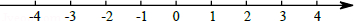
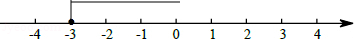

2014年北京市中考数学试题 · 数学解答题 第15题 · 对应解析
15．（5分）（2014•北京）解不等式x﹣1≤x﹣，并把它的解集在数轴上表示出来．

考点： 解一元一次不等式；在数轴上表示不等式的解集．菁优网版权所有
分析： 去分母、去括号，移项、合并同类项，系数化成1即可求解．
解答： 解：去分母，得：3x﹣6≤4x﹣3，
移项，得：3x﹣4x≤6﹣3，
合并同类项，得：﹣x≤3，
系数化成1得：x≥﹣3．
则解集在数轴上表示出来为：

．点评： 本题考查了解简单不等式的能力，解答这类题学生往往在解题时不注意移项要改变符号这一点而出错．
解不等式要依据不等式的基本性质：
（1）不等式的两边同时加上或减去同一个数或整式不等号的方向不变；
（2）不等式的两边同时乘以或除以同一个正数不等号的方向不变；
（3）不等式的两边同时乘以或除以同一个负数不等号的方向改变．